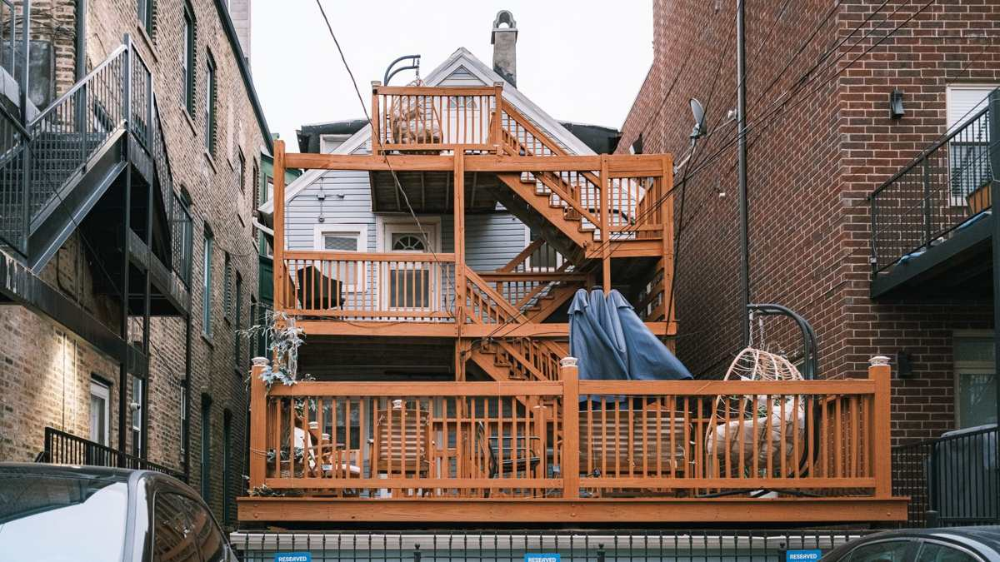

A torn-down privacy fence or a rotted deck leaves more behind than almost anyone plans for. Pickets, rails, posts with concrete still on them, joists, decking boards, hardware and usually a layer of old landscape fabric underneath. Most of it is treated lumber, which is why it cannot go in the regular trash and should never be burned.
People underestimate this job more consistently than any other one we get called for, and it is almost always the volume rather than the difficulty.
Why a fence makes so much more debris than it looks like
A fence stands in a straight line, so people picture it as a line. Stacked flat in a yard it becomes a mound.
Every section is pickets plus two or three horizontal rails, and then there are the posts. Posts are the part that surprises people, because a post that was set properly comes out of the ground with a footing attached to it. That footing is concrete, and concrete is dense material with rules of its own.
Decks do the same thing in a different shape. Surface boards come up fast and look manageable. What is under them is a frame of joists and beams, usually attached to the house, plus footings, plus whatever has been living under the deck since it was built.
What comes down, in the order it comes down
Pickets and decking first. These are the fast part and the biggest visual pile. Old cedar and pine splinters and comes apart, so it stops being reusable lumber and becomes debris.
Rails and joists next. Nails and screws are the issue here more than weight. Boards with fasteners still in them are how a yard turns into a tire problem for whoever mows it next.
Then the posts. Wood posts set in concrete either come out whole with the footing or snap off at ground level and leave the footing behind. Both happen. Metal posts usually come out cleaner and go to a metal recycler.
Then whatever was under it. Landscape fabric, gravel, an old sprinkler head somebody forgot about, and a decade of leaf mulch. This is the layer people forget to account for when they estimate the job.
Storm damage off the lake sends us a lot of this work, and the approach near the water is its own problem because of narrower streets and shared drives. We go through that on our page about clearing torn-up fence and deck sections in Little Elm.
Anything living, the brush, branches and root balls that came out with the fence line, is separate. That side is yard debris, and the rules for it are their own subject, covered in brush piles, tree limbs and what the city will not collect. In Little Elm we clear the limbs and clippings a torn-out fence line leaves behind on the same visit. Most cities collect brush on a different schedule than they collect building material, which matters if you are trying to use the free route.
Never burn treated wood. Older fence and deck lumber was pressure treated with chromated arsenicals, and burning it puts arsenic into the smoke and concentrates it in the ash. The EPA is direct about this at chromated arsenicals. It goes to a landfill or a building materials facility, not a burn pile.
Why treated lumber has its own rules
Fence pickets, deck boards, posts and joists are almost all pressure treated so they survive being outside. That treatment is exactly why the wood cannot be composted, chipped into mulch, or burned in a fire pit.
It also usually means it is not accepted as yard waste even though it came out of a yard. Cities separate green waste from building material because the green waste stream gets ground into mulch, and treated wood cannot go into mulch.
Boards in genuinely good shape are a different story. If a section came down intact and the wood is sound, a Habitat for Humanity ReStore accepts usable building materials at many locations. Read that location's accepted list before loading anything, because a stack of weathered pickets is not what they mean by usable lumber. We are haulers, not appraisers, and we will not pretend otherwise about what a pile is worth.
What the city takes and what it will not
This is the part worth checking before you pay anybody, because sometimes the free route works.
Most cities here run bulky waste collection on a schedule with a published accepted list and a size limit. Plano spells out exactly what qualifies at bulky waste accepted items, and the pattern is similar across the northern suburbs. Two things usually decide it: whether building material is on the accepted list at all, and whether your pile fits inside their volume limit.
A full privacy fence run almost never fits inside a bulky waste limit. A single section might. A deck almost never does.
Concrete footings are the other common decline. Dense material is heavy enough that most residential programs exclude it outright.
Texas keeps a general recycling starting point at the state level through TCEQ recycling, and the EPA covers where this category of material is supposed to end up in sustainable management of building materials. The short version is that clean wood, metal and concrete all have real destinations that are not a landfill, and separating them at the yard is what makes that possible.
Metal is the easy win. Chain link, metal posts, gate hardware, deck brackets and old railing all go to a metal recycler rather than a hole in the ground.
How we run a teardown pile
If the fence or deck is already down and stacked, it is a haul. A crew looks at the pile, gives you a firm number before anything is lifted, and the number holds. Disposal is included in it, so the quote is the bill. You point, we carry, we sweep, and the yard gets raked over for fasteners before we leave.
If it is still standing, that is demolition plus haul. Say so when you write, because it changes the time the job takes and we would rather know before the crew is in your driveway. The same logic applies to sheds, hot tubs and playsets, which is covered in hot tub, shed and playset removal.
Concrete footings get called out separately. Dense material is handled differently because of weight limits, the same way it works on a remodel job. If you have footings, mention how many and roughly how big.
One thing to handle before we get there: if any part of the teardown involves digging out posts you did not set yourself, get the utility locate done first. Buried lines run along property lines more often than people assume.
Our own people do the carrying, not gig labor hired off an app that morning. We run pickups seven days a week across Plano, Allen, Frisco, McKinney, Richardson, Little Elm, Prosper, The Colony, Wylie and Fairview. Call before noon and the same afternoon is typical, though typical is the honest word rather than guaranteed. Tell us what you have and we will quote it before we load anything.
Frequently asked questions
Can you tear the fence down, or does it have to be down already?
Either. Tell us which when you write, because a standing fence is demolition plus haul and it changes how long the job takes.
Do you take the concrete footings?
Yes, but tell us up front. Concrete is dense material and it is handled differently than wood because of weight limits.
Can I just put the fence at the curb for the city?
Sometimes, for a single section. A full fence run or a deck almost never fits inside a residential bulky waste limit, and many cities exclude building material entirely. Check your city's accepted list first.
Is any of the old wood worth keeping?
Rarely, once it has been outside for years. Sound intact boards can go to a ReStore. Weathered, split or nail-riddled pickets are debris.
What about the old stain and sealer cans in the garage?
Those stay with you. Stain, sealer and solvents are household hazardous waste and go free to your city's household chemical collection program, not on our trailer.
If a fence or a deck is coming down and the pile has to go, the rest of what we haul is on the services page. There is no rush on our end.